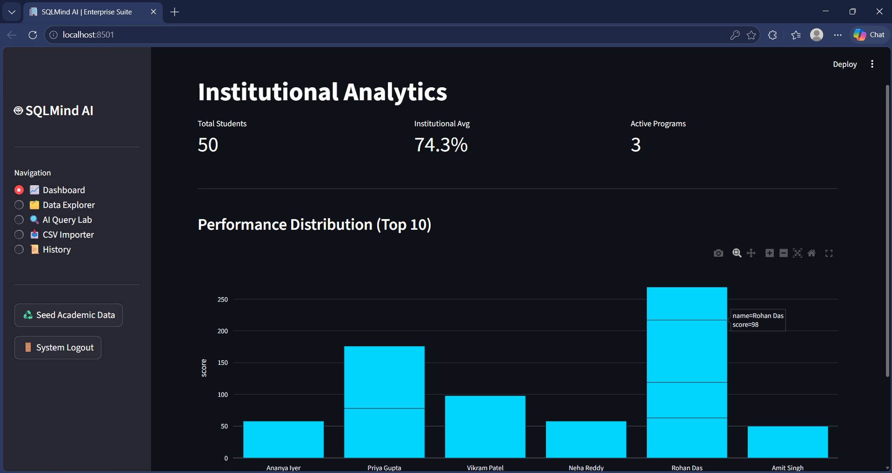
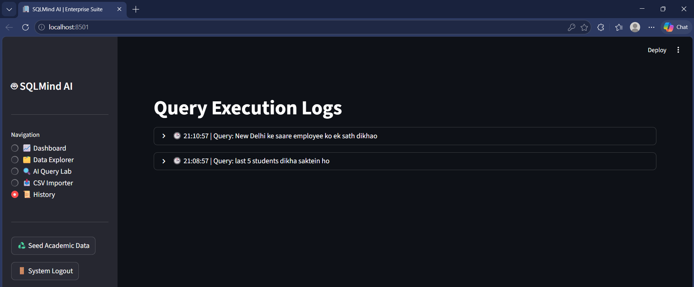
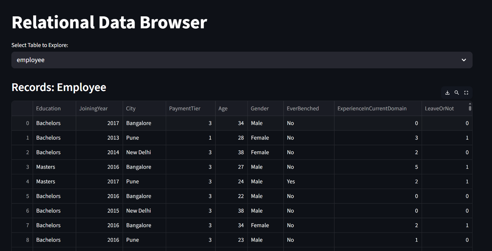
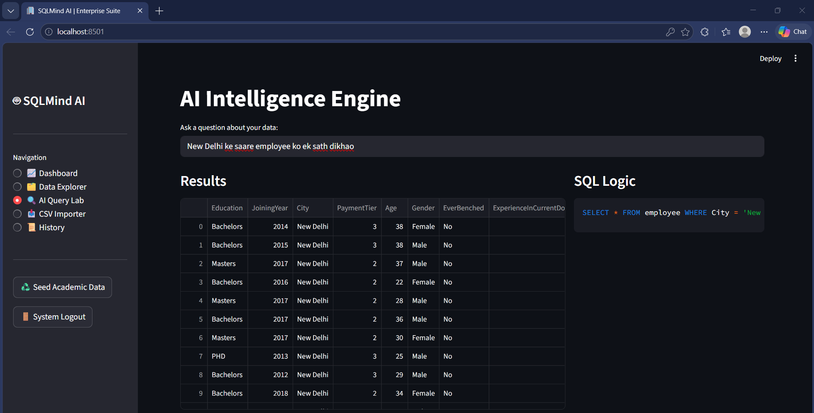
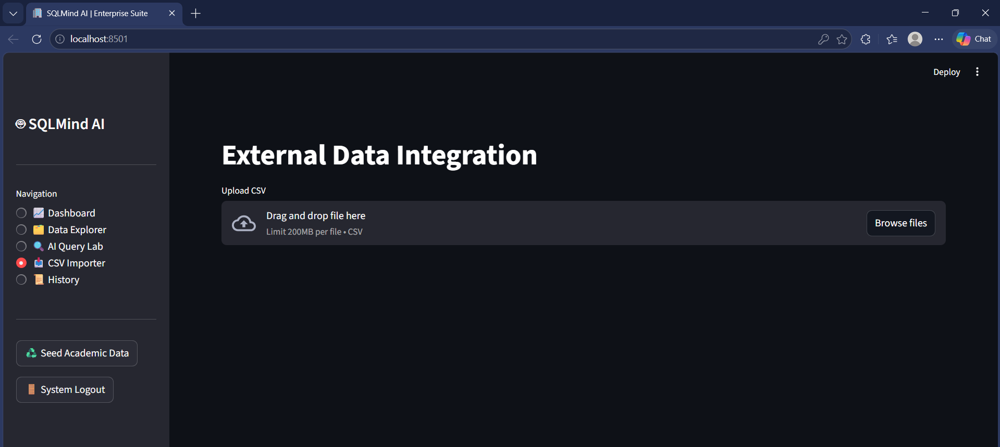
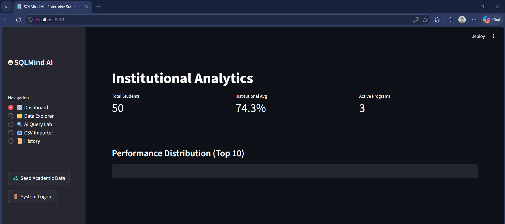

Shivanker
Awasthi
MCA postgraduate building data-driven products with Python, MySQL, Power BI, Machine Learning, NLP and Large Language Models.



Turning data into useful systems.
I work at the intersection of analytics, dashboards and AI-assisted tools. My goal is to make complex information easier to explore, understand and use.
My background includes data cleaning, reporting, visualization, machine learning, NLP, LLM-based solutions and practical application development. I enjoy building tools that help users query data, generate insights and improve decision-making.
SQLMind AI — Enterprise Data Intelligence Suite
SQLMind AI is presented here as a featured portfolio project because it combines data exploration, AI-assisted querying, dashboarding, CSV import and query history into one unified dark-theme platform.
What this project shows
- AI-powered natural language to SQL workflow
- Dashboard and institutional analytics interface
- Relational data browsing and record exploration
- CSV import pipeline for external data integration
- History log for query traceability



Selected work.
Text Editor & Plagiarism Checker
Developed a text editor with plagiarism detection using NLP and cosine similarity to automate duplicate-content detection and originality verification.
Credit Card Fraud Detection System
Built a fraud detection system using machine learning classification workflows, including preprocessing, feature engineering and model evaluation.
Prediction of Solar Storms
Dissertation work focused on solar storm prediction using large datasets, data cleaning, preprocessing and exploratory analysis to identify patterns.
Professional experience.
Data Analyst
Vernacular Consultancy Services Pvt. Ltd.
Currently working as a Data Analyst. Detailed responsibilities and project work can be added once finalized for public display.
Industrial Trainee — Data Analyst
SIGMAIT Software Development Pvt. Ltd., Lucknow
- Perform data analysis, data cleaning, annotation and structured data preparation using Python, Excel, Power BI and SQL.
- Support the Admin Cell with data organization, documentation and day-to-day information management.
- Conduct research on new tools, technologies and business requirements to support internal improvement initiatives.
- Collect, organize and review content and data required for the company website revamp.
- Support the technical team with data-related tasks and assist in preparing, organizing and identifying files and information useful for bidding and proposal work.
Technical toolkit.
Programming
Python, Java
Database
MySQL
Analytics
Power BI, Excel, Data Visualization, Data Cleaning
AI / ML
Machine Learning, NLP, Ollama, LLMs
Web
HTML, CSS
Tools
Git, VS Code, Android Studio, Word, PowerPoint
Academic background.
Master of Computer Applications
Babu Banarasi Das University, Lucknow
CGPA: 8.65 / 10Bachelor of Science (Mathematics)
Dr. Ram Manohar Lohia Avadh University
74%